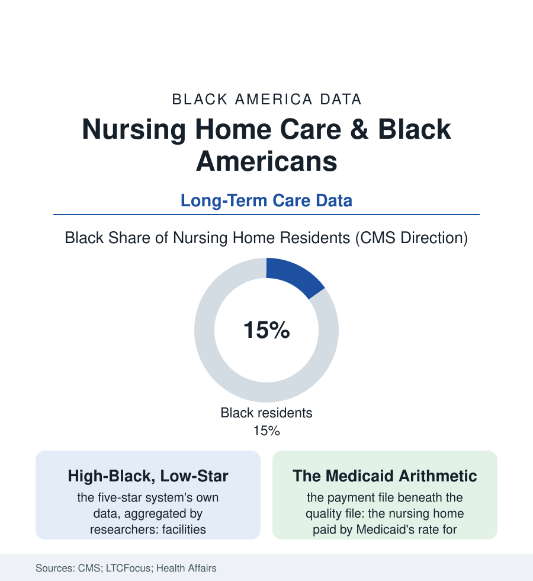

Black Public Health
The Last Address: Nursing Homes and the Segregation That Stayed
America desegregated its hospitals with a signature in 1966. Its nursing homes never quite followed — the quality data still sort by the race of the residents down the hall. The last-address file.

Of all the institutions in this atlas, the nursing home may be the one where the twentieth century's lines survived most intact: a sector that desegregated on paper in the Medicare era and re-sorted itself, through payment and geography, into facilities whose quality ratings track the race of their residents with a fidelity the researchers call, simply, segregation. This article reads the last-address file.
How the Sorting Works
The mechanism is the payment file wearing a care file's clothes: the long-stay nursing home is financed overwhelmingly by Medicaid (the middle-class spend-down of the senior file arriving at the state program's rate — the lowest in the building, a fraction of the Medicare rehabilitation rate and the private rate), so a facility's revenue is set, bed by bed, by its residents' wealth. The facilities in Black neighborhoods, serving the spend-down population entire, run on the Medicaid rate alone — their staffing ratios, their deficiency citations, their five-star ratings posted in the federal data in the pattern the LTCFocus researchers have mapped for two decades: the high-Black-share facility's odds of the lowest rating tier multiples of the low-share facility's, the gap surviving adjustment for region and size, the staffing hours per resident-day — the file's most honest number, the aide's minutes at the bedside — running lowest exactly where the residents are Blackest and poorest. The resident's experience of the arithmetic is the daily file: the call light's wait, the aide responsible for a dozen residents' mornings, the pressure injuries and the weight loss and the hospital transfers of the quality measures — the outcome rows in the federal data where the racial gaps inside the building compound the building's own. The pandemic wrote the file in its largest type: the mortality data of 2020 sorting by the facility's racial composition with the same fidelity as the star ratings, the virus reading the staffing table like a map. And the workforce across the hall is this book's own: the nursing-home aide corps — the direct-care file's largest regiment, disproportionately Black women — delivering, at the Medicaid rate's wages, the care whose shortfalls the quality file then attributes to their building: the payer's arithmetic wearing, in the end, the aide's face and the resident's chart.
The Alternatives and the Reckoning
The population's own preference data are the era's clearest: the surveys show Black families choosing the facility last and latest — the home-care preference, the family caregiving file's enormous unpaid economy, standing as the community's revealed verdict on the institution — the nursing-home residency rates by race in the data running below the white rates at the younger old ages and converging only at the highest, the facility entered when the kin system's capacity, not its willingness, gives out. The alternatives' files are the policy frontier: the home-and-community-based services waivers (their waiting lists the states' confessions), the PACE programs' all-inclusive model, the Green House small-home experiments whose staffing and outcome data read like the anti-file — and their distribution, in the siting data, running to the same map as everything else. The reckoning's instruments are the era's: the federal staffing-rule battles of the recent years (the minimum-hours mandate proposed, litigated, and revised in the regulatory record), the star system's reforms, the ownership-transparency data exposing the chains' structures, the civil-rights enforcement theory that names the payment map's result by its name. The file's closing datum is the demographic one, and it waits for no rule: the Black senior population of the census file is the fastest-growing in the book, its facility years approaching in numbers the system has never housed — the last address of a rising share of this atlas's elders being written now, in staffing tables and Medicaid rates, by people who will never meet them. The residents' families, visiting on Sundays with the file's whole history in their hands, are doing the math the star system does. They deserve the numbers to change before the math is done on them.
Reading the Nursing Home Data
The last-address file is the health section's audit of an ending: care at the frailest age, sorted by the oldest lines. CMS publishes the stars. The call-light waits — timed, in the families' own logs, in minutes that feel like the years they are — publish the truth the stars approximate.
More in Black Public Health
Hypertension Among Black Adults: Prevalence, Control, and Consequences
About 55 percent of Black adults have hypertension — the highest rate of any U.S. group. Prevalence, onset, control, and the stroke, heart, and kidney consequences in the data.
Diabetes Among Black Adults: Prevalence and Complications
Nearly one in five Black adults has diabetes, diagnosed or undiagnosed — and its complications fall with particular weight. The CDC data on prevalence, control, and outcomes.
Black Life Expectancy: The Gap at Birth and Its Causes
Black life expectancy at birth is about 73 years, roughly five years below the national figure — the summary measure of every health gap in this section. The CDC data.
Source: Centers for Medicare & Medicaid Services Care Compare data; Brown University LTCFocus research; Health Affairs long-term care studies; Kaiser Family Foundation analyses.